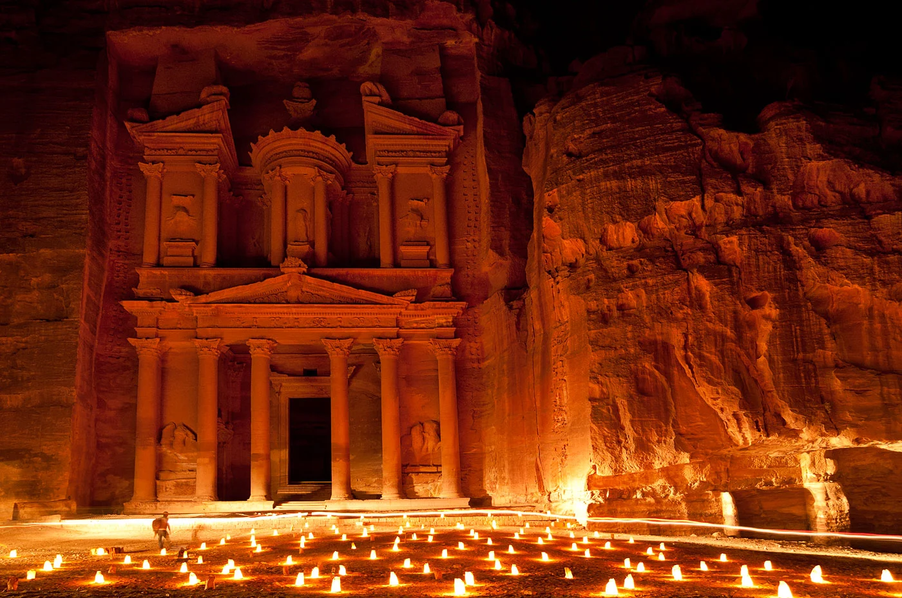

About Petra
Petra is an iconic archaeological site in southern Jordan, known as the "Rose City" due to the pink hue of its rock structures. Built by the Nabataeans in the 4th century BC, Petra served as their capital and a major trading hub due to its strategic position between the Red Sea and the Dead Sea. Its architectural marvels, such as Al-Khazneh (The Treasury) and the Monastery, were carved directly into the rock faces, showcasing remarkable craftsmanship.
Today, Petra is a UNESCO World Heritage Site and one of the New Seven Wonders of the World. It attracts millions of tourists annually who come to explore its historical significance and experience the enchanting landscapes.
